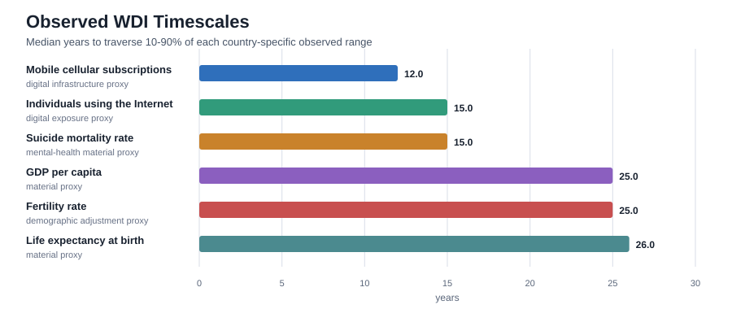
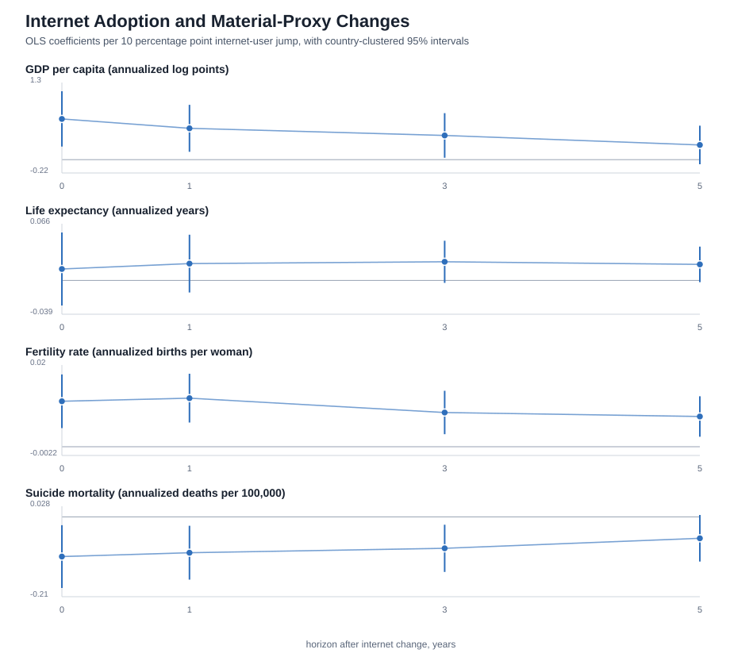

Fast Preference Closure
Nash equilibrium, material selection, and welfare when utility adapts on the fastest clock
Abstract
Economic models usually treat utility as an input to choice. This paper studies the opposite limiting case: a preference state adapts so quickly that, before the rest of the economy moves, utility has already been produced by the environment. In finite games with subjective utility distinct from material payoff, the limit \(T_\theta\to 0\) pins preferences to a fast attracting branch \(\theta_\ell^\star(E)\) induced by a closure law \(\ell\). The induced object is a reduced subjective game. Nash equilibrium still applies, but to that game rather than automatically to the material-payoff game. Material selection still applies, but to the adaptation laws, institutions, resistance parameters, or induced systems that remain heterogeneous after closure. The paper gives a closure lemma, a best-response invariance condition, a selection-target-shift theorem, and a platform-control application in which material loss depends on the alignment between the preference-generating proxy and the material evaluator. The point is not that fast endogenous preferences mechanically cause harm. It is that they move utility from the primitive side of the model to the closure side of the model.
Version Note
This working paper is deliberately broader than the journal-submission version. It keeps three layers visible for readers: the finite-game theory, the platform/proxy application, and an empirical appendix using WDI diagnostics. The WDI appendix disciplines timescale claims and illustrates what must eventually be measured; it is not causal evidence for preference closure or platform manipulation. The GEB-facing version excludes this appendix and keeps the journal submission theorem-led.
| Layer | Role in the paper | Interpretation |
|---|---|---|
| Formal finite-game model | Defines fast preference closure, reduced subjective games, Nash invariance, and selection after closure. | Theorem spine of the paper; formal claims are stated with proof arguments in the text. |
| Computational stress test | Checks whether the invariance condition is restrictive in random finite games and whether proxy alignment changes material loss. | Replication scripts and figures are included; interpreted as stress tests, not empirical evidence. |
| Platform/proxy application | Applies closure-law selection to institutions that optimize engagement, retention, or another proxy. | Formal application; material-harm claims remain conditional on proxy/material misalignment. |
| Empirical appendix: WDI timescale diagnostic | Measures exposure and outcome clocks using country-year data as a coarse empirical discipline. | Diagnostic only; does not identify preference states, algorithms, or causal platform effects. |
| Welfare interpretation | Shows why final-preference welfare is not invariant when policy can produce final preferences. | Conceptual implication; the paper identifies the welfare domain without imposing a complete welfare criterion. |
1. Introduction
The usual consumer problem starts after a crucial object has already been handed to the analyst. A preference relation is specified, represented by a utility function when convenient, and then agents optimize. This is not a mistake. It is one of the abstractions that makes equilibrium analysis possible. It becomes fragile, however, when the mechanisms that allocate goods also produce the preferences used to value those goods.
The claim here is not that preferences have never been endogenous in economics. Habit formation, addiction, cultural transmission, socialization, identity, advertising, status concerns, learning, and indirect evolutionary preferences all belong to the established literature. The conventional defense of treating utility as primitive is often a clock argument: preferences may move, but for the problem at hand they move slowly enough to be treated as parameters or background states.
A recommender system is the clean contemporary example. It does not only solve a static prediction problem of the form "what does this user want now?" It can choose the sequence of exposures that changes what the user will want next. If the future preference state is then treated as ordinary revealed preference, the mechanism has helped produce the standard by which it is judged.
This paper studies the reverse clock. Suppose the preference state adapts faster than the other state variables in the model. The motivating examples are digital and AI-mediated environments in which observation, exposure, updating, and future behavior form a short-cycle loop. The formal question is more general: what happens to Nash equilibrium, material selection, and welfare when the preference state closes before the slower economy moves?
The limit is deliberately extreme. Let \(T_\theta\) be the adjustment timescale of the preference state \(\theta\). The central comparative-static exercise is:
Other clocks are not assumed away. Action learning, algorithmic updates, institutional change, cultural transmission, and population growth can be faster or slower in different applications. The theory sends only the preference-adjustment clock to zero, then asks what object remains for equilibrium and selection analysis.
The contribution is a singular-limit analysis of finite games with subjective utility distinct from material payoff. In the limit, a fast attracting preference branch induces the game in which agents optimize. Nash equilibrium is then computed in that induced subjective game, while material selection evaluates the consequences and selects among the adaptation laws or institutions that remain heterogeneous after closure.
The roadmap is as follows. Sections 3-5 give the finite-game model and the Nash-invariance result. Section 6 reports computational stress tests of the invariance condition and proxy alignment. Sections 7-8 shift selection from initial preference states to closure laws and apply that logic to platform rule choice. Sections 9-11 explain the mechanism, welfare issue, and invariant claims. Section 12 keeps the empirical diagnostic visible, but only as timescale discipline and not as structural identification.
2. Related Work And Distinction
The paper sits between five literatures, each of which fixes a boundary of the claim.
First, preferences have long been allowed to depend on history, consumption capital, social context, and identity. This paper does not claim priority over that tradition. It asks what changes when preference adjustment is the fast variable rather than a slow state.
Second, indirect evolutionary preference theory already separates subjective preferences from material payoff. Subjective utility determines behavior; material fitness determines selection. The closest mathematical relatives include finite-game models of preference evolution and two-speed evolutionary systems. This paper reverses the emphasis: instead of slow preference selection operating behind faster behavior, it studies fast preference closure operating before equilibrium and material evaluation.
Third, singular perturbation theory provides the language of fast and slow systems. The present finite-game model uses a simple closure theorem rather than a full smooth dynamical-system treatment, but the economic interpretation is the same: a fast attracting subsystem reduces the state space before the slow variables evolve.
Fourth, recommender-system and platform-welfare papers show that engagement objectives can diverge from welfare and that feedback loops can alter the environment being optimized. The contribution here is not the engagement-welfare gap by itself. It is the formal placement of preference-transition laws inside a game with subjective equilibrium and material evaluation after fast closure.
Fifth, behavioral welfare economics, meta-preferences, and autonomy-based approaches already warn that final preferences may not be the correct welfare criterion when preferences are shaped by the process under evaluation. This paper does not solve that normative problem. It shows why the welfare domain must include transition laws or preference paths once the model itself produces the preference state.
The wedge is therefore not endogeneity, feedback, or welfare ambiguity by itself. It is the singular timing: preference adjustment occurs before the equilibrium and selection operators are applied. Relative to indirect evolutionary preference models, the timing is reversed: preference states close before material selection acts. Relative to platform-welfare models, the platform is not merely exploiting inconsistent current preferences; it is choosing an environment that helps generate future utility representations. That timing turns familiar ingredients into a different reduced game.
3. Environment
The main model is a finite game with a fast preference state. Let \(N=\{1,\ldots,n\}\) be the finite set of players, \(A_i\) player \(i\)'s finite action set, and \(A=\prod_i A_i\) the set of action profiles. An action profile is \(a=(a_i,a_{-i})\).
The slow material environment is \(E\in\mathcal E\). The closure law is \(\ell\in\mathcal L\). A closure law can be a habit technology, a cultural transmission rule, an institutional regime, a platform policy, or a susceptibility type. In the platform application below, the platform's feasible rules \(r\in\mathcal R\) are treated as particular closure laws.
Each player has two payoff objects. The subjective utility \(U_i\) is the representation the player maximizes. The material payoff \(\pi_i\) is the payoff used for growth, survival, or material evaluation. These are not assumed to coincide.
The distinction is easiest to read in evolutionary language but does not depend on biology. A player may maximize the utility representation currently encoded by \(\theta_i\), while the outside evaluator records profit, health, output, retention, fertility, exit, or survival. The model's work begins precisely when these two objects are not silently identified.
The variable \(\theta_i\in\Theta_i\) is player \(i\)'s preference state, and \(\Theta=\prod_i\Theta_i\). It may encode attention weights, salience, habit stock, social comparison weights, moral taste, risk attitude, time preference, identity, or any low-dimensional or high-dimensional parameter that changes the current utility representation.
The preference state obeys a fast dynamic. To allow social, platform, and peer effects, write the fast subsystem in vector form:
The dot denotes the time derivative. The main theorem treats closure as a function of the slow environment and the closure law, not as a simultaneous action-preference fixed point. Action-dependent preference feedback can be modeled by replacing this object with a joint closure correspondence; that is an extension. The important object here is the attracting branch. If, for each \((E,\ell)\), the fast subsystem has a unique stable fixed point, write it as \(\theta_\ell^\star(E)\). Its player-\(i\) component is \(\theta_{i,\ell}^\star(E)\). This notation is mnemonic: \(\theta_\ell^\star\) is the preference state produced by closure law \(\ell\).
The reduced subjective game induced by fast closure is:
The material game, used as a benchmark, is:
For any finite game \(\Gamma\), let \(\Delta(A_i)\) be player \(i\)'s mixed-strategy simplex and \(X=\prod_i\Delta(A_i)\) the set of mixed-strategy profiles. The Nash set is \(NE(\Gamma)\subseteq X\). When a scalar material comparison is needed, the article uses an explicit equilibrium-selection map \(\sigma_\ell(E)\in NE(\Gamma_\ell^\star(E))\). A material evaluator \(M:X\times\mathcal E\times\mathcal L\to\mathbb R\), interpreted as expected material payoff or another specified material criterion at the selected mixed profile, then gives:
All later results use this order. Preferences close first; agents then optimize in the induced subjective game; material evaluation occurs only after that optimization step.
4. Fast Preference Closure
The first result is a reduction statement. In the fast limit, the analyst should not carry \(\theta\) as an independent slow state unless the fast subsystem is nonunique, cyclic, or otherwise fails to close.
Fix a slow environment \(E\) and closure law \(\ell\). Suppose the fast subsystem \(T_\theta\dot{\theta}=H(\theta;E,\ell)\) has a unique globally attracting fixed point \(\theta_\ell^\star(E)\). Then, after the initial fast adjustment and in the limit \(T_\theta\to 0\), any equilibrium analysis conducted at that slow state is represented by the reduced subjective game \(\Gamma_\ell^\star(E)\). The preference state is no longer an independent slow primitive; it is the induced object \(\theta_\ell^\star(E)\).
Proof. Fix \(E\) and \(\ell\). On the fast time \(s=t/T_\theta\), the preference subsystem is \(d\theta/ds=H(\theta;E,\ell)\). Global attraction implies that every initial state in the relevant basin converges to \(\theta_\ell^\star(E)\) as \(s\to\infty\). Thus, along any sequence \(T_\theta\downarrow 0\) observed after the fast boundary layer and before the slow state changes, the payoff table used for play converges pointwise to \(U_i(\cdot;\theta_{i,\ell}^\star(E),E,\ell)\). Since action sets are finite, this limiting payoff table defines the reduced game \(\Gamma_\ell^\star(E)\), and any Nash calculation after adjustment is a Nash calculation in that game.
The lemma is a closure result, not a welfare result. It identifies the payoff object that agents optimize after fast adjustment; whether that object is materially adaptive or normatively acceptable is a separate question. A full moving-slow-state singular perturbation theorem would require additional uniform attraction, compactness, smoothness, and a specified law of motion for \(E\) and \(\ell\).
5. Nash Equilibrium After Closure
Nash equilibrium is a mathematical fixed-point concept. Endogenous preferences change its inputs, not the fixed-point method. What changes is the payoff object that generates best responses.
Let \(X_{-i}=\prod_{j\ne i}\Delta(A_j)\). For a mixed profile \(x=(x_i,x_{-i})\), write \(x(a)=\prod_j x_j(a_j)\). The expected subjective and material payoffs are:
The reduced subjective game therefore gives player \(i\)'s mixed best-response correspondence:
For the material benchmark game, the corresponding mixed material best response is:
If \(BR_{i,\ell}^\star(x_{-i};E)=BR_{i,\ell}^\pi(x_{-i};E)\) for every player \(i\) and every mixed opponent profile \(x_{-i}\in X_{-i}\), then the mixed Nash equilibrium sets of \(\Gamma_\ell^\star(E)\) and \(\Gamma_\ell^\pi(E)\) coincide. For a single fixed game this condition is sufficient, not necessary: off-equilibrium best responses may differ while the Nash set happens to remain the same. The condition is the natural invariance test when the analyst wants predictions to survive changes in equilibrium selection, feasible restrictions, or opponent profiles.
Proof. Mixed Nash equilibria are fixed points of mixed best-response correspondences. If all correspondences are identical, their fixed-point sets are identical. Differences away from equilibrium need not change a particular Nash set, which is why the proposition is stated as a sufficient condition and an invariance discipline rather than as a converse theorem for one fixed game.
The neutral benchmark has an exact counterpart. Some preference movements can change subjective representation without changing strategic incentives.
Suppose that for every player \(i\) there exist \(\beta_i>0\) and \(\alpha_i(a_{-i};E,\ell)\), independent of \(a_i\), such that:
\[ U_i(a_i,a_{-i};\theta_{i,\ell}^\star(E),E,\ell) = \alpha_i(a_{-i};E,\ell) + \beta_i\,\pi_i(a_i,a_{-i};E,\ell). \]Then \(BR_{i,\ell}^\star(x_{-i};E)=BR_{i,\ell}^\pi(x_{-i};E)\) for every \(x_{-i}\in X_{-i}\), and therefore the mixed Nash equilibrium sets coincide: \(NE(\Gamma_\ell^\star(E))=NE(\Gamma_\ell^\pi(E))\).
Proof. Fix \(x_{-i}\). The expected \(\alpha_i\) term is a weighted average over \(a_{-i}\), so it is constant in \(x_i\). The multiplier \(\beta_i>0\) preserves the argmax of expected material payoff. Thus the mixed best-response correspondences coincide for every opponent profile, and Proposition 1 gives equality of Nash sets.
By contrast, any closure that changes a conditional own-action ranking changes a best-response correspondence away from indifference boundaries.
Suppose that for some player \(i\), actions \(a_i,b_i\in A_i\), and opponent mixed profile \(x_{-i}\), action \(a_i\) is the unique material best response and action \(b_i\ne a_i\) is the unique subjective best response:
Then \(BR_{i,\ell}^\star(x_{-i};E)\ne BR_{i,\ell}^\pi(x_{-i};E)\). The mixed best-response invariance condition fails, although Nash sets may still coincide in special games. In a two-action choice set this condition is equivalent to a strict subjective/material ranking reversal between the two actions.
Proof. At the same opponent mixed profile, the material and subjective best-response correspondences are distinct singleton sets. They therefore cannot be identical. In a two-action choice set, a strict subjective/material ranking reversal between the two actions is exactly this strict-maximizer reversal.
Let two players each choose \(A\) or \(B\). For both players and every opponent action, material payoff satisfies:
The material benchmark game has the unique Nash equilibrium \((A,A)\). Suppose the closure-law family contains a law \(\ell\) whose attracting branch induces:
Then \(B\) is strictly dominant in the reduced subjective game, so \(NE(\Gamma_\ell^\star(E))=\{(B,B)\}\), while \(NE(\Gamma_\ell^\pi(E))=\{(A,A)\}\).
6. A Finite-Game Stress Test
The proposition suggests a non-trivial check. If the argument is correct, a neutral transformation should preserve best responses, while strategic preference closure can change equilibrium predictions in the random-game audit when it alters mixed best responses. If material harm is conditional rather than automatic, an aligned platform proxy should produce much less material loss than an independent or misaligned proxy.
Main Stress Test
To check that the argument is not driven by the scalar application, the analysis uses a finite-game stress test. It generates 5,000 random two-player, two-action games per route. Fast preference closure is represented as a payoff transformation. The routes are:
- Neutral control: preference movement adds terms that do not depend on the player's own action.
- Random strategic closure: preference closure adds a random strategic payoff distortion.
- Proxy aligned: an institution chooses a closure law using a proxy close to material welfare.
- Proxy independent: the proxy is unrelated to material welfare.
- Proxy misaligned: the proxy is approximately the negative of material welfare.
Material payoffs are drawn independently from the uniform distribution on \([-1,1]\). In the strategic routes, the selected outcome is represented as a distribution over the four action profiles. If pure equilibria exist, the selection rule chooses a pure equilibrium using the relevant ranking payoff; otherwise the code uses the mixed equilibrium when it is interior and a uniform fallback when the mixed formula is degenerate. A selected-distribution shift is recorded when the \(L^1\) distance between selected distributions exceeds 0.25. The best-response diagnostic now uses the theorem-aligned test: in a two-action game, each player's expected payoff difference is affine in the opponent's mixing probability, and the subjective and material signs must agree for every point in that interval. The weaker pure-endpoint check asks only whether they agree at the two pure opponent actions. In the proxy routes, the closure-intensity grid is \(\{0,0.25,0.75,1.5,3.0\}\). Material loss is the difference between the maximum material evaluator attainable on that grid and the material evaluator at the proxy-maximizing law. The replication files are results/tables/model_selection_summary.csv and results/tables/model_selection_proxy_routes.csv.

The first diagnostic is the one used by Proposition 1; the second reports the weaker test one would get by checking only pure opponent actions.
Table 1A. Best-response diagnostics.
| Route | Mixed BR | Endpoint BR | Outcome shift |
|---|---|---|---|
| Neutral control | 1.0000 | 1.0000 | 0.0000 |
| Random strategic closure | 0.0762 | 0.3126 | 0.5044 |
Table 1B. Proxy-choice diagnostics.
| Route | Outcome shift | Proxy loss |
|---|---|---|
| Noisy proxy aligned with material welfare | 0.3766 | 0.0432 |
| Proxy independent of material welfare | 0.7244 | 0.5758 |
| Proxy misaligned with material welfare | 0.9730 | 0.9706 |
The first proxy row uses noisy approximate alignment. Exact maximizer-set alignment, stated in Proposition 3 below, gives zero material loss on the feasible set.
The mixed best-response number is deliberately stricter than the pure-endpoint check. Random strategic closure preserves all mixed best-response correspondences in only 7.62 percent of games, even though it passes the weaker pure-action endpoint check in 31.26 percent. That gap matters: the theorem is about correspondences over mixed opponent profiles, not just rankings against pure actions. The aligned-proxy control is the other important number. It prevents the paper from claiming that fast endogenous preferences mechanically imply material decline. When the preference-generating proxy is close to material welfare, material loss is uncommon in this stress test. When the proxy is independent or misaligned, material loss becomes common in this stress test. The theory therefore points to a conditional empirical question: what objective or transition law actually generates the preference closure?
Sensitivity Checks
A sensitivity audit reinforces the conditional reading. With distortion scale \(0\), the subjective and material games coincide: mixed best-response invariance is \(1.0000\) and selected-equilibrium shift is \(0.0000\). At scale \(4\), invariance is \(0.0313\) and shift is \(0.7153\). With exact proxy alignment, material loss is \(0.0000\) even though selected-equilibrium shift is \(0.3647\). Figure 2 carries the rest of the grid. The point is subtle but central: strategic distortion changes games; material loss rises as alignment erodes; equilibrium movement is not itself material loss.

The next question is therefore not whether selection still matters, but what objects remain for selection once preference states have already closed.
7. Selection After Closure
Material selection is also a method, not a conclusion. It evaluates material consequences and changes the weights of types, populations, institutions, or systems. The fast-preference limit changes the type space that remains available for selection.
Each closure law \(\ell\in\mathcal L\) induces a closure map \(\theta_\ell^\star(E)\), a reduced subjective game \(\Gamma_\ell^\star(E)\), an equilibrium selection \(\sigma_\ell(E)\), and a material evaluator \(G_\ell(E)=M(\sigma_\ell(E),E,\ell)\). For the selection equation, restrict attention to a finite active set \(\mathcal L_0\subseteq\mathcal L\) with shares \(n_\ell\ge 0\) for \(\ell\in\mathcal L_0\) and \(\sum_{\ell\in\mathcal L_0} n_\ell=1\). A standard material selection equation is:
The material evaluator \(G_\ell\) is computed after the reduced subjective game is solved:
Fix \(E\) and \(\ell\). Let \(Q_\ell\) be a set of initial preference states, and let \(C_\ell(E,q)\) be the post-closure state reached from \(q\in Q_\ell\). Write \(\Gamma_\ell^\star(E;q)\) for the reduced subjective game generated by \(C_\ell(E,q)\). Define \(q\sim_{E,\ell}q'\) if \(C_\ell(E,q)=C_\ell(E,q')\). A material selection rule is post-closure admissible if it depends on \(q\) only through the reduced game, selected post-closure play, and the material evaluator; for example, \(S(q;E,\ell)=M(\sigma(\Gamma_\ell^\star(E;q)),E,\ell)\). If \(q\sim_{E,\ell}q'\), then \(q\) and \(q'\) induce the same reduced subjective game and the same Nash set. Consequently, every post-closure admissible material selection rule is constant on each closure-equivalence class. Under common unique closure, all \(q\in Q_\ell\) lie in one equivalence class, so selection over initial preference states is degenerate in the \(T_\theta\to 0\) limit.
Proof. If \(q\sim_{E,\ell} q'\), the closure map gives \(C_\ell(E,q)=C_\ell(E,q')\). The payoff table in the reduced subjective game is therefore identical under the two initial states, so their Nash sets coincide. A post-closure admissible selection rule receives the same reduced game and selected play as input, so it gives the same evaluation. Direct reward of the pre-closure state \(q\) is outside this theorem. Only heterogeneity that survives closure, such as different laws \(\ell\), can be selected.
This result is a target shift, not a denial of selection. In a slow-preference model, selection may act on preference types. In a fast-preference model with common closure, selection acts on the machinery that produces preferences.
8. Platform Control As Application
The platform case gives the closure map an institutional owner. An ordinary environment may shape preferences incidentally; a platform can optimize over the transition environment itself. Formally, a platform chooses a rule \(r\) from a feasible set \(\mathcal R\), and each \(r\) is a closure law in the general set \(\mathcal L\). The choice affects the fast closure map, which affects the reduced subjective game, which affects material outcomes. The platform may optimize a proxy \(V\), such as engagement, retention, time-on-platform, revenue, or some learned response objective. Material welfare or survival is represented separately by \(G\).
The platform's chosen rule is:
The material benchmark rule is:
For a fixed feasible set \(\mathcal R\), if proxy maximizers are always material maximizers, \(\arg\max_{r\in\mathcal R} V(r)\subseteq \arg\max_{r\in\mathcal R} G(r)\), then proxy choice produces no material loss relative to that feasible set. A sufficient condition is that \(V\) and \(G\) have the same maximizer set on \(\mathcal R\); strict ordinal equivalence is sufficient when it preserves the relevant maximizers. Conversely, if there exist two rules \(r_1,r_2\) with \(V(r_1)>V(r_2)\) and \(G(r_1)<G(r_2)\), then on the feasible set \(\{r_1,r_2\}\), proxy choice selects a materially inferior closure law.
Proof. If every proxy maximizer is also a material maximizer on \(\mathcal R\), then any selected \(r^V\) attains the feasible maximum of \(G\). Equality of maximizer sets is a direct sufficient condition. Strict ordinal equivalence is also sufficient when it preserves the relevant maximizers and ties on \(\mathcal R\). For the reversal construction, restrict the feasible set to two rules \(r_1,r_2\) such that \(V(r_1)>V(r_2)\) but \(G(r_1)<G(r_2)\). Then proxy maximization selects \(r_1\) and loses material payoff relative to \(r_2\).
Equilibrium shifts are not necessarily material losses. A rule can change the induced subjective game and the selected equilibrium while preserving the material criterion if the proxy remains aligned with the evaluator. Material loss requires misalignment with the chosen evaluator, not merely movement in behavior. In the finite-game stress test, losses are common under independent and misaligned proxies; that result is a computational illustration, not part of the proposition.
The application is not just "engagement is not welfare." The endogenous-preference step is essential because the platform's rule changes future utility representations, not only current choices. A platform that learns how to make users prefer the next state can then cite those induced preferences as evidence of satisfaction. The model says that material evaluation and welfare analysis must inspect the transition law, not only final revealed preference.
9. Exposition: A Scalar Taste Model
The finite-game model carries the theorem. A scalar model makes the mechanism visible. Let \(s\ge 0\) be exposure intensity chosen by an institution and \(p\in[0,1]\) a platform-oriented preference state. A simple fast preference dynamic is:
The fast closure is:
The institution does not choose the agent's action directly. It chooses the exposure environment that pins the preference state from which the action is chosen.
If material growth is \(g(p)\), survival in this one-dimensional illustration is exactly:
This model can generate stark pictures. If higher \(s\) raises \(p^\star\) and high \(p^\star\) lowers \(g\), then there is an exposure threshold beyond which the induced preference state is materially unsustainable. But the result is only as general as those monotonic assumptions. The example is retained not as evidence for the general theorem, but as a map of the mechanism: an exposure rule pins a preference state, the preference state induces behavior, and material viability is evaluated afterward.
10. Welfare When Preferences Are Produced
Welfare becomes delicate once the mechanism under evaluation produces the preference state used for evaluation. The problematic loop is:
Consider an agent who initially prefers an allocation that preserves outside options. A transition law then induces a preference for a more absorbing allocation, and the agent chooses it. Ex post satisfaction is real in the model: the final utility representation really does rank the absorbing allocation higher. The welfare problem is that the mechanism being evaluated helped create the preference that now endorses it.
The formal conclusion is a non-invariance result. Final-preference welfare is not invariant when the policy can shape final preferences. Several criteria can disagree:
- Initial-preference welfare: evaluate outcomes using the preference state before the transition.
- Final-preference welfare: evaluate outcomes using the induced preference state after closure.
- Material welfare: evaluate outcomes using \(\pi\), \(G\), health, reproduction, income, survival, or other material proxies.
- Meta-preference welfare: evaluate whether the transition itself was endorsed.
- Path welfare: evaluate the whole allocation-preference path rather than a terminal allocation.
- Constitutional welfare: restrict the admissible transition laws before maximizing any terminal criterion.
Let there be two terminal allocations \(x\) and \(y\), and two transition laws \(A\) and \(B\). Initial preferences rank \(x\succ_0 y\). Law \(A\) induces a final preference state \(\theta_A\) that ranks \(y\succ_A x\) and selects \(y\). Law \(B\) preserves the initial ranking and selects \(x\). If the material evaluator satisfies \(G(x)>G(y)\), then final-preference welfare under \(A\) ranks the induced path favorably, while initial-preference welfare and material welfare rank \(B\) favorably. A meta-preference against preference reversal would also reject \(A\). Thus final-preference welfare comparisons are not invariant to preference production.
The result is diagnostic rather than criterion-selecting. It is a warning about domain, supported by a minimal construction rather than a general theorem. If utility is produced inside the model, welfare analysis must say whether it evaluates allocations, final preferences, transition laws, material consequences, or paths.
11. What Is Invariant?
The limiting exercise is most useful because it separates what is robust from what depends on assumptions.
| Claim | Status in \(T_\theta\to 0\) |
|---|---|
| Utility as a fixed primitive | Not invariant. Utility becomes a representation induced by \(\theta_\ell^\star(E)\). |
| Nash equilibrium as a fixed-point method | Invariant. It applies to the reduced subjective game. |
| Nash sets of subjective and material games | Conditional. They survive only under best-response preservation. |
| Material selection | Invariant as an evaluation operator, but its target changes after closure. |
| Material harm | Not a theorem of speed alone. It depends on proxy alignment, feasible laws, and material evaluation. |
| Final-preference welfare | Not invariant when the transition law can produce final preferences. |
The table summarizes the invariant and non-invariant objects. In the fast-preference limit, the extreme result is not that every system fails. The extreme result is that utility moves from the list of primitives to the list of endogenous closures.
Once the invariant claims are separated from the conditional ones, the empirical task becomes narrower: measure the relevant clocks and estimate exposure-outcome associations rather than assume them.
12. Empirical Appendix: Timescales And Exposure-Outcome Associations
The theory does not require the analyst to assume which real-world clocks are slow. It implies a measurement program: estimate preference or exposure timescales, compare them with material and demographic variables, and ask whether exposure-outcome associations have the sign and scale predicted by a proposed closure mechanism.
The empirical exercise uses the World Bank World Development Indicators API as a first macro diagnostic. It is not a causal estimate of social media or AI effects, and it does not observe preference closure. Its value is narrower: it shows how to put exposure proxies and material outcomes on measured clocks, and it supplies a baseline against which stronger microdata designs would have to improve.
The WDI analysis uses country-year data for 1990-2024, with suicide mortality available in the downloaded API pull for 2000-2021. The indicators are internet users, mobile subscriptions, GDP per capita, life expectancy, fertility, and suicide mortality.
Timescale Measurement
For internet adoption, define \(D_{c,t}\) as individuals using the Internet in country \(c\) and year \(t\), measured in percent of population. For consecutive annual observations with a remaining non-user gap above five percentage points, the annual remaining-gap closure speed is:
The cross-indicator timescale is the number of years needed for a country to move from 10 percent to 90 percent of its own observed range. GDP per capita is logged for this calculation.

The median country-level internet remaining-gap half-life is 19.70 years across 210 countries with usable rising annual pairs. The median 10-90 traversal is 15 years for internet users and 12 years for mobile subscriptions, compared with 25 years for logged GDP per capita, 26 years for life expectancy, and 25 years for fertility.
Exposure-Outcome Association
The WDI exercise is not an alignment test in the structural sense. It is a prototype for the measurement problem: exposure variables and material outcomes can be put on common horizons, and their associations can be estimated before the analyst asserts which clock dominates. The internet regressor is the one-year adoption change scaled in 10 percentage point units:
For outcome \(y\), define \(Y_{c,t}=100\log(y_{c,t})\) for GDP per capita, so the coefficient is in annualized log points, and \(Y_{c,t}=y_{c,t}\) for level outcomes. The horizon-\(h\) annualized response is measured from \(t-1\) to \(t+h\):
Thus \(h=0\) is the annualized one-year change from \(t-1\) to \(t\), not a zero-length response. The estimated panel equation is:
The fits include lag controls, year fixed effects, and country-clustered standard errors. Since \(D_{c,t}\) is measured in percent, the lagged internet control enters as \(D_{c,t-1}/100\), a 0-1 share. The specification does not include country fixed effects. For the GDP-per-capita outcome, the lagged outcome and lagged log GDP per capita coincide, so the lag is included only once.

| Outcome | Horizon | Coefficient | Clustered SE | 95% CI | Obs. |
|---|---|---|---|---|---|
| GDP per capita, annualized log points | 0 | 0.6628 | 0.2296 | [0.2128, 1.1129] | 5641 |
| GDP per capita, annualized log points | 3 | 0.3942 | 0.1854 | [0.0309, 0.7575] | 5105 |
| Life expectancy, annualized years | 3 | 0.0216 | 0.0124 | [-0.0028, 0.0459] | 5113 |
| Fertility, annualized births per woman | 3 | 0.0084 | 0.0027 | [0.0031, 0.0137] | 5120 |
| Suicide mortality, annualized deaths per 100,000 | 3 | -0.0843 | 0.0323 | [-0.1476, -0.0211] | 3203 |
The estimates are mixed and do not support a simple harm narrative. Internet adoption jumps are positively associated with GDP per capita growth at short horizons in this diagnostic; life expectancy coefficients are small and imprecise; fertility coefficients are positive; suicide mortality coefficients are negative at short horizons. Since suicide mortality is an adverse proxy, a negative coefficient is opposite the simple harm narrative. The WDI exercise therefore plays a deliberately modest role. It does not test whether platforms produce preferences. It shows how the paper's measurement question can be disciplined empirically: exposure proxies, outcome proxies, and their relative timescales can be measured rather than assumed, and a proposed mechanism must survive that measurement rather than merely sound plausible.
13. Limitations And Extensions
The limit is useful because it is severe, but the severity also marks the boundaries of the argument.
First, the unique-closure assumption is strong. If the fast preference subsystem has multiple attracting branches, the reduced object is a basin-selection problem. Small changes in initial conditions, exposure, or institutions can switch the induced subjective game.
Second, equilibrium multiplicity matters. The finite-game audit uses an explicit equilibrium-selection convention for simulation. The theory statements above are set-valued where possible, but welfare and material comparisons in richer models will require either set-valued evaluation or a selection rule.
Third, the empirical proxy is crude. Internet users and mobile subscriptions are not preference states. They are macro exposure variables. A sharper empirical program would use individual panels, feed experiments, deactivation experiments, recommender-rule changes, or repeated elicitation of choice elasticities.
Fourth, the model does not prove that social media or AI makes people materially worse off. It shows where such a claim would have to enter: in the alignment between the preference-generating operator and the material or normative criterion.
Fifth, the welfare section is incomplete by design. The paper shows non-invariance of final-preference welfare under preference production. It does not provide a complete replacement criterion.
14. Conclusion
When utility adapts on the fastest clock, utility is not the primitive that closes the model. It is the object closed by the model.
That single change reorganizes three familiar ideas. Nash equilibrium remains the fixed-point method, but it is computed in the reduced subjective game induced by fast preference closure. Material selection remains a growth-based evaluation method, but it acts on adaptation laws, institutions, populations, or systems that remain heterogeneous after closure. Welfare analysis remains possible, but it must evaluate transition laws or preference paths rather than only allocations under final preferences.
The most unsettling implication is also the most disciplined one. Material harm is not a theorem of speed alone. It becomes possible, and in the stress test common, when the preference-generating operator is independent of or misaligned with the material evaluator and the resulting closure changes best-response behavior. The framework yields testable restrictions once a closure law, exposure proxy, and material evaluator are specified: the alignment of those objects becomes the thing to measure.
References
Adomavicius, Gediminas, Jesse C. Bockstedt, Shawn P. Curley, and Jingjing Zhang. "Do Recommender Systems Manipulate Consumer Preferences? A Study of Anchoring Effects." Information Systems Research 24(4), 2013, 956-975. Record.
Ashton, Hal, and Matija Franklin. "Solutions to Preference Manipulation in Recommender Systems Require Knowledge of Meta-Preferences." 2022. arXiv.
Bernheim, B. Douglas, Debraj Ray, and Sevin Yeltekin. "Poverty and Self-Control." Econometrica 83(5), 2015, 1877-1911. Record.
Bernheim, B. Douglas, Luca Braghieri, Alejandro Martinez-Marquina, and David Zuckerman. "A Theory of Chosen Preferences." American Economic Review 111(2), 2021, 720-754. Record.
Bisin, Alberto, and Thierry Verdier. "The Economics of Cultural Transmission and the Dynamics of Preferences." Journal of Economic Theory 97(2), 2001, 298-319. Record.
Bowles, Samuel. "Endogenous Preferences: The Cultural Consequences of Markets and Other Economic Institutions." Journal of Economic Literature 36(1), 1998, 75-111. Record.
Chaney, Allison J. B., Brandon M. Stewart, and Barbara E. Engelhardt. "How Algorithmic Confounding in Recommendation Systems Increases Homogeneity and Decreases Utility." RecSys, 2018, 224-232. arXiv.
Dekel, Eddie, Jeffrey C. Ely, and Okan Yilankaya. "Evolution of Preferences." Review of Economic Studies 74(3), 2007, 685-704. PDF.
Ely, Jeffrey C., and Okan Yilankaya. "Nash Equilibrium and the Evolution of Preferences." Journal of Economic Theory 97(2), 2001, 255-272. Record.
Fenichel, Neil. "Geometric Singular Perturbation Theory for Ordinary Differential Equations." Journal of Differential Equations 31(1), 1979, 53-98. Reference.
Heifetz, Aviad, Chris Shannon, and Yossi Spiegel. "What to Maximize if You Must." Journal of Economic Theory 133(1), 2007, 31-57. PDF.
Jiang, Ray, Silvia Chiappa, Tor Lattimore, Andras Gyorgy, and Pushmeet Kohli. "Degenerate Feedback Loops in Recommender Systems." AIES, 2019. arXiv.
Khosrowi, Donal, and Lukas Beck. "Like It or Not: Recommender Systems Lack a Coherent Normative Foundation." FAccT 2026, forthcoming. Record.
Kleinberg, Jon, Sendhil Mullainathan, and Manish Raghavan. "The Challenge of Understanding What Users Want: Inconsistent Preferences and Engagement Optimization." Management Science 70(9), 2024, 6336-6355; earlier version 2022. arXiv.
Robson, Arthur J., Lorne A. Whitehead, and Nikolaus Robalino. "Adaptive Utility." Journal of Economic Behavior and Organization 211, 2023, 60-81. PDF.
Sadowski, Philipp, and Todd Sarver. "Adaptive Preferences: An Evolutionary Model of Non-Expected Utility and Ambiguity Aversion." Journal of Economic Theory 218, 2024, 105840. Record.
Sandholm, William H. "Preference Evolution, Two-Speed Dynamics, and Rapid Social Change." Review of Economic Dynamics 4(3), 2001, 637-679. Record.
Stigler, George J., and Gary S. Becker. "De Gustibus Non Est Disputandum." American Economic Review 67(2), 1977, 76-90. Record.
World Bank. World Development Indicators and Indicators API v2. API documentation. Indicators used here include IT.NET.USER.ZS, IT.CEL.SETS.P2, NY.GDP.PCAP.KD, SP.DYN.LE00.IN, SP.DYN.TFRT.IN, and SH.STA.SUIC.P5. Cached replication metadata reports last update 2026-04-08.